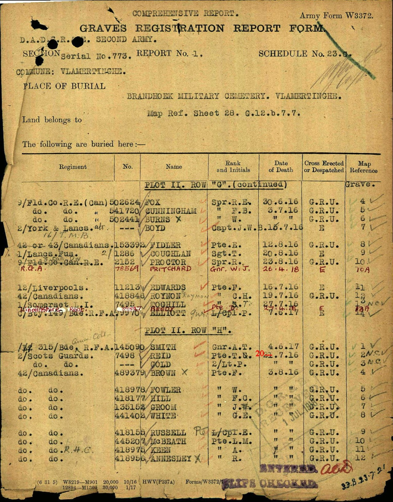
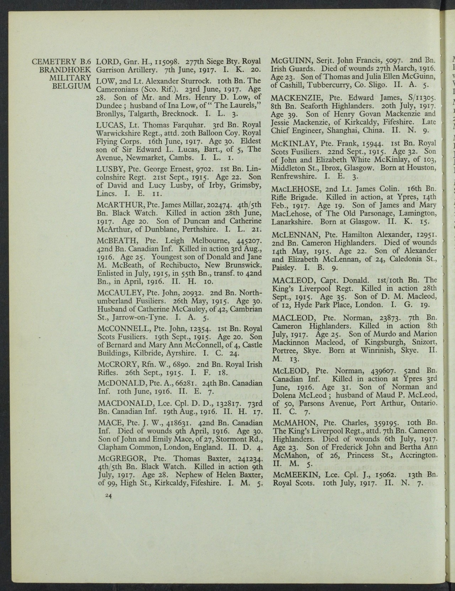
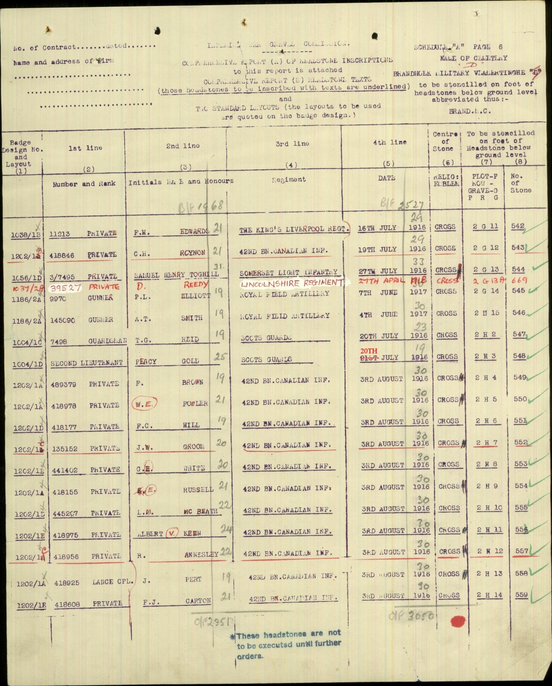
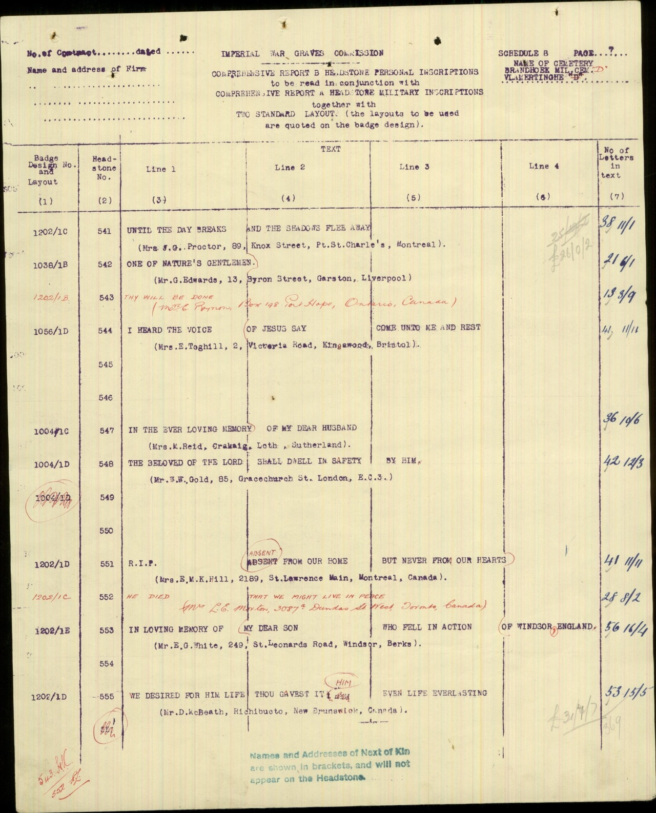
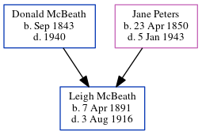

Leigh Melbourn McBeath 1891 - 1916
[ Home ] | [ Calendar ] | [ Surnames Index ] | [ Census Index ] | [ Family History ]The child of Donald McBeath (a farmer) and Jane Peters, Leigh Mcbeath, the third cousin twice-removed on the father's side of Nigel Horne, was born in New Brunswick, Canada on Apr 7, 18911. In 1911, he was living at his birthplace3. In Jul 1915 he was serving in the military (canadian Infantry, 55th Bn. transferred to 42nd Bn. in Apr 1916; Private; Service number 445207).
He died on Aug 3, 1916 in Ypres, West Flanders, Belgium1,2 and was buried at Brandhoek Military Cemetery, Vlamertinghe, Belgium in 1916.
Parents
- Donald was born in Sep 1843
- Jane Marion was born on Apr 23, 1850
Citations
- Commonwealth War Graves Commission Debt Of Honour - Findmypast
- Canada, Find A Grave Index, 1600s-Current Ancestry.com Operations, Inc.
- Canada Census 1911 - Findmypast (was the son of the head of the household)
Media
Leigh McBeath - graves registration

Leigh McBeath - graves registration register

Leigh McBeath - headstone schedule

Leigh McBeath - headstone schedule - 2

Canada Census 1911 Transcription - CAN-CENSUS-1911-01307394
Commonwealth War Graves Commission Debt Of Honour - GBM/CWGC/ROLLOFHONOUR/000671185
Family Tree
Generated by ged2site. Last updated on Jun 11, 2024